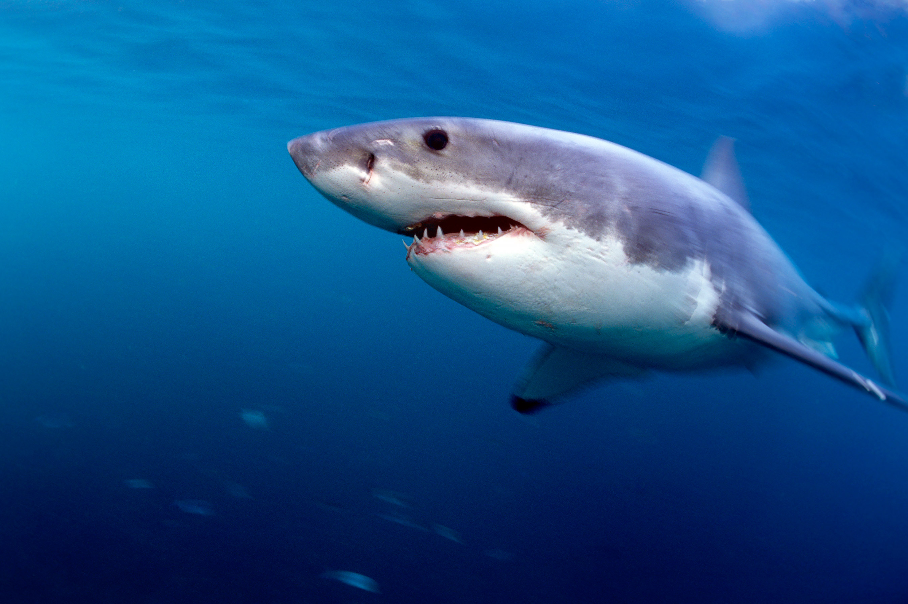

About Sharks
Sharks are a group of elasmobranch fish characterized by a cartilaginous skeleton, five to seven gill slits on the sides of the head, and pectoral fins that are not fused to the head.
Sharks are a key part of the marine ecosystem, playing a crucial role in maintaining the balance of marine life.